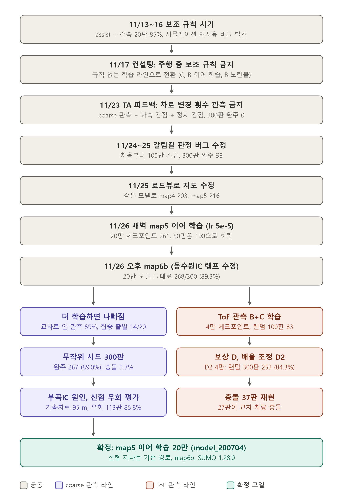

목표: 일반도로와 고속도로가 이어진 실제 경로
한 구간짜리 직선 고속도로가 아니라, 시내 교차로에서 출발해 고속도로를 타고 내려 다시 시내로 들어가는 실제 경로를 처음부터 끝까지 달리게 하는 것이 목표입니다. 평가 기준은 차량 충돌률 5% 미만입니다.
- 출발의왕 철도박물관 주차장
- 시내 0.8 km신협오거리 (신호 없는 교차로)
- 시내의왕역 회전교차로
- 고속도로부곡IC 진입 · 가속차로 합류
- 고속도로영동고속도로 본선
- 고속도로동수원IC 진출
- 시내창룡대로 · 광교로
- 도착 13.5 km수원광교박물관 주차장
도로
OSM 원본을 netconvert로 변환했습니다. 창룡대로, 동수원 요금소 뒤, 부곡 영업소 뒤, 동수원IC 진출 램프는 지도가 실제와 달라 카카오 로드뷰와 대조해 차로 수와 연결을 고쳤습니다.
교통
배경 차량은 SUMO가 운전합니다. 판마다 시드를 바꿔 배경 교통이 달라지게 하고, 판마다 SUMO를 새로 시작합니다.
끝나는 조건
도착 주차장에 닿으면 완주입니다. 차량 충돌, 빨간불 통과, 경로에서 끊기는 차로 끝에 닿으면 그 판은 실패로 끝납니다.
자율주행 차량이 보는 것, 하는 것, 받는 것
한 스텝은 0.5초입니다. 최종 모델은 아래 관측 37칸만 보고 행동을 정하며, 주행 중에 행동을 바꿔 주는 보조 규칙은 쓰지 않습니다.
관측 ot · 37칸
- 1 · 내 속도
- 20 · 좌2·좌1·현재·우1·우2 차로의 앞차·뒤차 거리와 상대속도
- 3 · 내 차로가 50 m 안에 끝나는지, 다음 갈림길까지 거리와 방향
- 2 · 허용속도, 내 속도와 허용속도의 차이
- 5 · 차로별 앞쪽 차량 밀도
- 6 · 앞 신호(거리·색·남은 시간), 양보 교차로(거리·양보 의무·교차 차량 접근)
행동 at · 2개
가감속(연속값, 정규분포)과 차선변경(왼쪽·유지·오른쪽, 범주형 분포)입니다. 속도 상한으로 행동을 자르지 않고, 과속은 보상의 감점으로만 다룹니다. 옮겨 갈 차로가 없거나 교차로 안이거나 안전 간격이 없는 차선변경 명령은 실행되지 않습니다.
보상 rt
+0.1 · 속도 / 차로 제한속도 과속 감점 (가중치 1.0) −0.3 정지 −0.1 앞차 6 m 이내 −1 양보 위반 −5 빨간불 통과 (종료) −30 차량 충돌·차로 끝 (종료) +30 도착
차선변경 감점과 앞차에 막힘 감점은 0입니다.
방법: 규칙을 빼고, 관측과 지도를 고쳤다
PPO 정책
- 하이브리드 정책: 가감속은 정규분포, 차선변경은 범주형 분포
- 은닉층 256 × 256, rollout 2,048스텝, 10 epoch, minibatch 64
- γ = 0.995, GAE λ = 0.95, clip ε = 0.2
- 처음부터 100만 스텝(학습률 1e-4) 학습한 뒤, 고친 지도에서 학습률 5e-5로 이어 학습
- 이어 학습은 10만 스텝마다 저장해 같은 시드 300판으로 비교하고 20만 스텝 체크포인트를 골랐습니다
방향이 바뀐 지점
- 보조 규칙을 뺐습니다. 처음에는 경로 차로 유도와 감속 규칙으로 완주율을 올렸지만, 주행 중 보조 규칙은 쓰지 않기로 하고 규칙 없는 학습으로 바꿨습니다.
- 관측을 줄였습니다. "경로를 따르려면 차선을 몇 번 바꿔야 하는지"를 알려 주던 칸을 빼고, 50 m 안 차로 끝과 다음 갈림길의 거리·방향만 남겼습니다.
- 갈림길 판정 버그를 고쳤습니다. 지도에서 안 쓰는 도로를 지우면 실제 갈림길이 막다른 차로가 되는데, 이를 경로 안 차로로 잘못 알려 주고 있었습니다. 고치기 전에는 300판 완주가 0이었습니다.
- 지도를 실제와 맞췄습니다. 실패가 몰린 지점을 로드뷰와 비교해 차로 수와 연결을 고쳤습니다.

같은 모델, 지도만 고쳤을 때
| 단계 | 300판 중 완주 |
|---|---|
| 갈림길 판정 수정 후 처음부터 100만 스텝 | 98 |
| 창룡대로 4차로 반영 | 203 |
| 동수원 요금소 뒤 차로 반영 | 216 |
| 고친 지도에서 이어 학습 20만 스텝 | 261 |
| 동수원IC 진출 램프 모양 수정 | 268 |
학습용 PC(SUMO 1.27.1)에서 잰 값입니다. 이어 학습을 더 하면 30만 227, 40만 239, 50만 190으로 떨어졌습니다.
결과: 차량 충돌률 2.0%
최종 모델을 같은 시드 300판(시드 2026·2086·2146·2206·2266에서 각 60판, 판마다 SUMO 새로 시작)으로 평가했습니다. 주행 중 보조 규칙은 모두 껐습니다.
| 평가 | 판 수 | 완주 | 차량 충돌 | 차로 끝 이탈 | 신호 위반 |
|---|---|---|---|---|---|
| 같은 시드 300판 · SUMO 1.28.0 | 300 | 262 (87.3%) | 6 (2.0%) | 23 | 9 |
| 같은 시드 300판 · SUMO 1.27.1 (다른 PC) | 300 | 268 (89.3%) | 12 (4.0%) | 16 | 4 |
| 무작위 시드 300판 · SUMO 1.27.1 (다른 PC) | 300 | 267 (89.0%) | 11 (3.7%) | 19 | 3 |
| 데이터 수집 주행 · SUMO 1.28.0 (PC 2대) | 5,200 | 4,597 (88.4%) | 133 (2.6%) | 338 | 126 |
같은 시드여도 SUMO 버전과 PC가 다르면 판별 결과가 달라집니다. 같은 PC에서는 같은 시드가 같은 결과로 재현됩니다. 데이터 수집 주행에는 텔레포트 5판과 시간 초과 1판이 더 있습니다.
남은 실패가 몰린 곳
같은 시드 300판(SUMO 1.28.0)의 실패 38판입니다.
- 부곡IC 가속차로 12판 · 가속차로가 95 m로 짧아, 본선 차와 나란히 달리다 차로가 끝납니다
- 의왕역 회전교차로와 진입로 15판 · 진입로 신호 위반 9, 차로 끝 이탈 5, 충돌 1
- 동수원IC 진출 6판 · 출구로 이어지는 차로로 옮기지 못함
- 신협오거리 5판 · 신호 없는 교차로에서 교차 차량과 충돌
배운 것
- 완주 0의 원인은 보상이 아니라 관측의 버그였습니다. 실패 위치를 먼저 세어 보니 한 지점에 몰려 있었습니다.
- 잘 되는 모델에서 더 학습하면 매번 나빠졌습니다. 교차로 관측을 추가한 이어 학습은 59%, 실패 지점 집중 학습은 같은 시드 20판에서 18판이 14판으로 떨어졌습니다.
- 학습 보상이 가장 높은 체크포인트가 가장 좋은 모델이 아니었습니다. 체크포인트는 같은 시드 평가로 골랐습니다.
- 100판 평가의 92%가 300판에서는 84%였습니다. 판 수가 적으면 우연과 실력이 구분되지 않습니다.
주행 영상
최종 모델이 출발지에서 목적지까지 완주한 한 판(시드 702226, 13.62 km, 2,723스텝)을 배속으로 편집했습니다. 빨간 차가 자율주행 차량입니다. 신협오거리 정지 후 통과, 가속차로 합류, 앞차에 맞춘 감속, 진출 전 차선변경 구간은 느리게 보여 줍니다.
주행 데이터셋
최종 모델로 주행하며 매 스텝의 관측·행동·보상과 SUMO의 실제 상태를 저장했습니다. 학습에 바로 쓰는 NPZ와 전체 기록 JSONL 두 형식이고, 100판 묶음마다 수집 조건 검사 결과를 함께 올렸습니다.
스텝마다 들어 있는 것
- 관측 37칸, 행동(정책 출력과 실제 적용값), 보상과 항목 12개별 값
- 정책 분포(가감속 평균·표준편차, 차선 확률 3개), critic 예측값, 할인 누적 보상
- SUMO 실제 상태: 위치·속도·차로, 앞 신호 2개, 차로별 경로 잔여 거리, 주변 차량
- 이벤트: 충돌 상대 차량, 신호 위반, 차선변경이 막힌 이유
수집 조건
- 결정적 행동(분포의 평균과 최빈값), 주행 중 보조 규칙 없음
- 판의 시드가 SUMO 시드와 같아 같은 PC에서 재현됩니다
- PC 2대에서 같은 조건으로 수집했고, 폴더(
data/s70,data/s73)로 나눠 올렸습니다 - 모델 파일 해시, 환경변수, 보상 설정, 코드 커밋을 판마다 기록
- 평가에 쓴 시드(2026~2325)와 겹치지 않습니다
Hugging Face: kimsua/team14-sumo-driving-data